Transformers
5
Learning Outcome
When you complete this learning material, you will be able to:
Explain the construction and operating principles of transformers.
Learning Objectives
You will specifically be able to complete the following tasks:
- 1. Describe the construction of core type and shell type transformers.
- 2. Explain the factors that affect transformer rating.
- 3. Calculate load, power, iron and copper losses, and efficiency in a transformer.
- 4. Explain the purpose and procedures for transformer short and open circuit tests.
- 5. Describe the methods of cooling a transformer.
- 6. Describe the methods of connecting a transformer, including delta-delta, star-star, delta-star, and star-delta.
- 7. Explain the theory and significance of transformer paralleling.
- 8. Describe the applications of instrument transformers.
- 9. Describe the safety controls used on a transformer including fast and slow gas detection, oil temperature alarms, low oil level protection, winding temperature alarms, overcurrent and undervoltage protection, synchronization checks, overexcitation, ground fault protection, phase sequence relays, dissolved gas monitoring, and differential protection.
Objective 1
Describe the construction of core type and shell type transformers.
Introduction
Transformers come in all shapes and sizes and work in a variety of applications. Small transformers are used for low-voltage power supplies found in computers, consumer electronics, and small appliances. Larger transformers are used to step up the voltage from generators at power generating stations to voltage levels used to transmit power to substations located near cities and towns. Transformers are also used to step down voltage to safe levels for use in industry and households.
In this module, most of the discussion will be devoted to larger transformers used to transmit and distribute electrical power.
Large transformers fall into two categories: power transformers and distribution transformers. Power transformers are large capacity transformers used in generating stations and substations. These transformers are custom built for the power requirements of the application. Generally, distribution transformers generally are smaller in capacity than power transformers and are mass-produced in common sizes.
Common sizes for distribution transformers fall between 3 kVA and 500 kVA. Power transformers are usually rated above 500 kVA.
TRANSFORMER CONSTRUCTION
A transformer consists of primary and secondary windings. These windings are electrically isolated from each other but are magnetically connected. The current flowing in the primary winding creates magnetic flux that cuts the conductors of the secondary winding. As shown in Fig. 1, there is a loss through leakage flux but an iron or steel core is used to reduce this loss.
The iron or steel core provides a controlled path for the magnetic flux generated by the current flowing through the windings (mutual flux). Efficient transformer design involves techniques that reduce leakage flux and voltage drop created by the resistance of the primary and secondary windings. Transformers often have an efficiency of more than 95% but a working transformer is usually warm or even hot. The heat generated is due to the losses of the transformer.
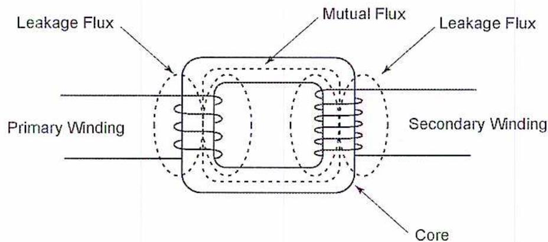
Figure 1
Flux Leakage
The core is made of several laminations between 0.18 and 0.28 mm thick. Each lamination is punched out of sheet steel alloy. Each lamination is coated with varnish that electrically isolates it from the adjacent lamination. This technique improves efficiency by reducing eddy currents. Lamination thickness is determined by mechanical considerations such as strength and tolerable magnetic and eddy current losses.
The metal used for transformer laminations must be magnetically soft . This allows magnetic energy to be absorbed without retaining the energy. Such metals make good magnetic shields because there is no residual magnetism when the applied voltage is removed.
Some examples of magnetically soft alloys are: low-carbon steel, silicon steel, nickel-iron, cobalt-nickel-iron, and cobalt-iron.
Transformer construction falls into two general classifications:
- • core
- • shell
Core Construction
In the core type (Fig. 2), the windings are placed around a laminated core. Each lamination consists of a yoke and two legs. Each winding is wound around one leg.
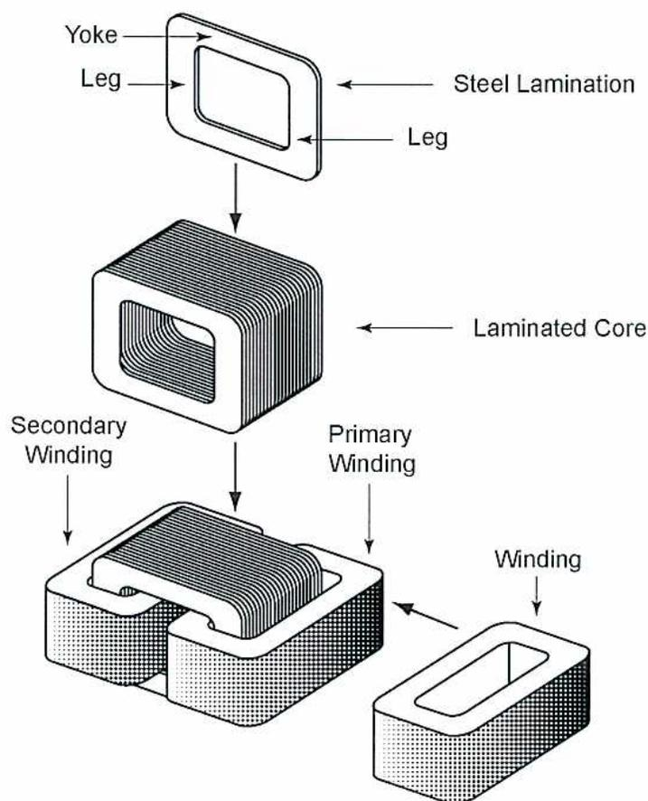
The diagram illustrates the assembly of a core transformer in an exploded view. At the top, a single 'Steel Lamination' is shown as a rectangular frame with a central opening. It is labeled with 'Yoke' for the top horizontal part, 'Leg' for the vertical parts, and another 'Leg' pointing to the right vertical part. Below this, an arrow points to a stack of many such laminations, labeled 'Laminated Core'. Further down, an arrow points to a partially assembled core where two 'Winding' units are being inserted into the central window. These are labeled 'Secondary Winding' and 'Primary Winding'. To the right, a separate 'Winding' unit is shown as a rectangular block with a central slot, with an arrow pointing to it from the label 'Winding'. The bottom-most part shows the core with the windings fully seated within its central window.
Figure 2
Core Transformer
Core design is used for high-voltage transformers. This configuration is easier to insulate and to cool.
Fig. 3 shows a typical winding arrangement for a core-type transformer. This arrangement reduces leakage flux. Half the high voltage winding and half the low-voltage windings are wound around one leg of the core and the other halves are wound around the other leg.
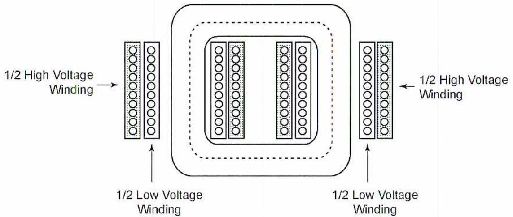
The diagram illustrates a single-phase transformer core with two windows. On the left window, the '1/2 High Voltage Winding' is shown as an outer layer and the '1/2 Low Voltage Winding' as an inner layer. The same arrangement is shown on the right window. Arrows point from the labels to the corresponding winding sections.
Figure 3
Core Winding
Three-phase transformers are widely used to transmit power. Fig. 4 shows a typical arrangement of the core and coils of a three-phase transformer.
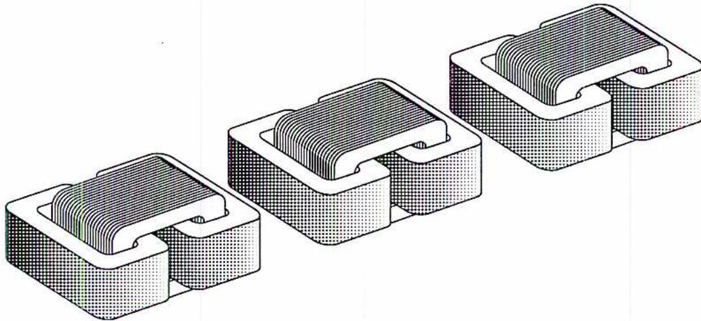
The image shows three identical core units arranged in a row, representing the three phases of a transformer. Each unit consists of a rectangular core with a central window and a winding coil placed around one of the vertical legs. The units are shown in a perspective view, highlighting their three-dimensional structure.
Figure 4
Three-phase Core Arrangement
Fig. 5 is a photograph showing the general construction of a three-phase core-type transformer.
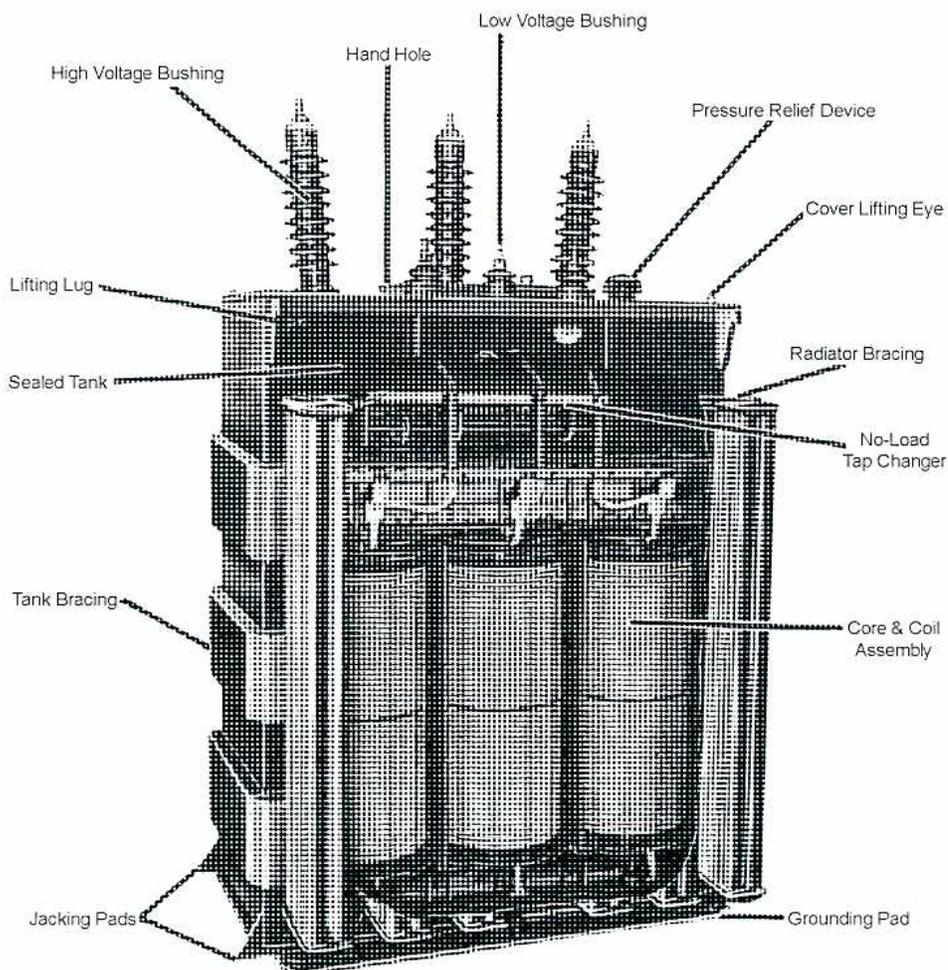
Figure 5
Transformer General Construction
The core-type has more room for insulation, and therefore can handle higher voltages.
Shell Construction
In the shell-type, both windings are wound around one central leg as shown in Fig. 6.
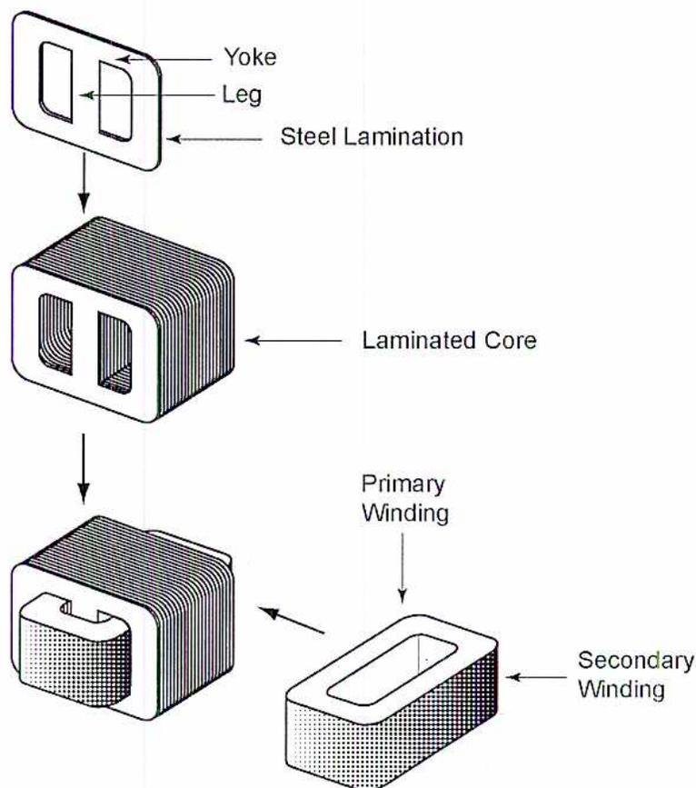
The diagram illustrates the assembly process of a shell-type transformer. It consists of three main parts connected by arrows:
- Top part: A single steel lamination with a rectangular shape, featuring two windows. Labels point to the top horizontal part as the "Yoke", the vertical parts as "Leg", and the entire piece as "Steel Lamination".
- Middle part: A stack of multiple laminations, forming a "Laminated Core".
- Bottom part: The laminated core with windings. On the left, the core is shown with a "Primary Winding" and a "Secondary Winding" wound around the central leg. On the right, the windings are shown separately, with the "Primary Winding" on top and the "Secondary Winding" below it.
Figure 6
Shell-type Transformer
In shell construction, the coil assembly is made first, and then the steel-laminated core is assembled around the coil. Most small power transformers are shell type. In an effort to reduce leakage flux, it would be ideal to have the core completely surround the windings, but this is impractical. The compromise is shown in the diagram, which stems from ease of maintenance, ease of construction, cost considerations, etc.
The shell type is more efficient in channelling core flux, so fewer turns are required. Construction costs for this type are cheaper, but ventilation of the shell-type design is often more difficult.
Fig. 7 shows a typical winding arrangement for a shell transformer. This arrangement reduces leakage flux. The primary and secondary windings are stacked so that each primary winding is adjacent to a secondary winding.
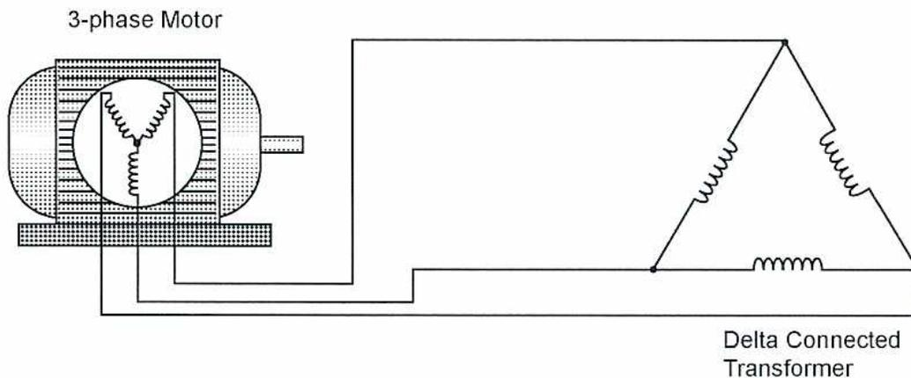
High Voltage Winding
Low Voltage Winding
Figure 7
Shell-type Winding Arrangement
Fig. 8 shows a cylindrical core arrangement for a three-phase shell-type transformer.
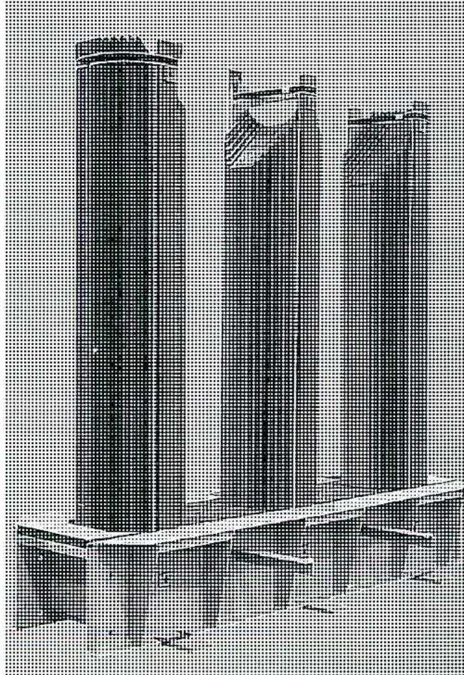
Figure 8
Cylindrical Core Arrangement
(Courtesy of Kuhlman Electric Corporation/GEA
Renzmann & Gruenewald GmbH)
Fig. 9 shows the completed windings assembled on the core arrangement. Some manufacturers use a cylindrical winding so that the maximum amount of conductor surface area is adjacent to the core. Cylindrical cores are used to provide the optimum magnetic path for the flux that links the primary and secondary windings.
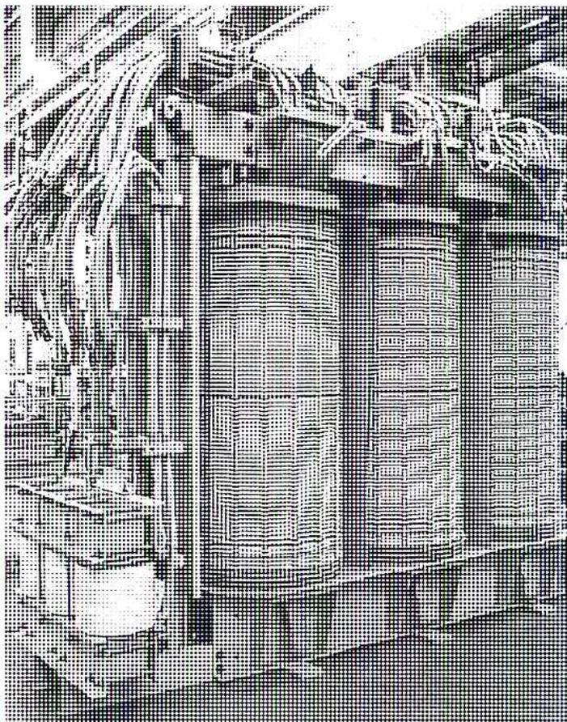
Figure 9
Three-phase Windings
(Courtesy of Kuhlman Electric Corporation/GEA
Renzmann & Gruenewald GmbH)
Windings
Each conductor in the windings is individually insulated. The amount of insulation depends on the voltage level of the transformer and whether construction is shell-type or core-type. Insulation may consist of a varnish coating or a cellulose layer between the windings.
Copper is the material of choice for transformer windings due to its characteristics of electrical conductivity, corrosion, and thermal conductivity. All primary and secondary coils are assembled and insulated from each other. The entire coil assembly is dipped in an insulating varnish and baked. Fig. 10 shows the transformer windings mounted in the tank (enclosure).
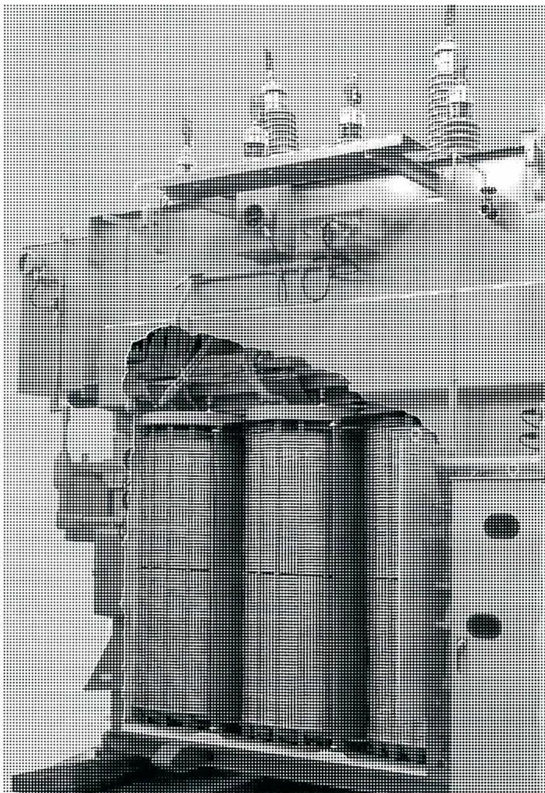
Figure 10
Transformer Enclosure
(Photo Courtesy of Kuhlman Electric Corporation/GEA
Renzmann & Gruenewald GmbH)
Objective 2
Explain the factors that affect transformer rating.
TRANSFORMER RATING
There are four factors that affect transformer performance:
- • kilovolt Amperes (kVA) rating
- • impedance
- • temperature rise
- • harmonics
Kilovolt Amperes (kVA) Rating
Kilovolt amperes (kVA) rating is the amount of current that the transformer can supply at a certain voltage. For example, a single-phase 10 kVA transformer operating with a secondary voltage of 240 volts can supply:
$$ \begin{aligned}\frac{10 \text{ kVA}}{20 \text{ V}} &= \frac{10 \ 000}{240 \text{ V}} \\ &= 41.67 \text{ A}\end{aligned} $$
A three-phase 112.5 kVA transformer operating with a secondary voltage of 208 volts can supply:
$$ \begin{aligned}\frac{112.5 \text{ kVA}}{\sqrt{3} \times 208 \text{ V}} &= \frac{112 \ 500 \text{ VA}}{1.732 \times 208 \text{ V}} \\ &= 312.28 \text{ A}\end{aligned} $$
Some transformers have two ratings. For example, if a transformer uses auxiliary fans to provide cooling, it will have one rating that applies when the fans are not operating, and a higher rating that applies when the fans are operating.
The kVA rating of a transformer is stamped on the nameplate located on the transformer enclosure.
Large power transformers are often rated in Megavolt Amps (MVA) instead of kVA.
Impedance
Resistance in resistive circuits provides the only opposition to current flow. In inductive circuits, opposition is provided by inductance in the form of inductive reactance. Because resistance is built into a load, it is unaffected by the circuit current or voltage. Inductive reactance is directly proportional to frequency. Therefore, its value depends on the frequency of the applied voltage.
Even though a voltage drop occurs when current flows through a resistance or an inductive reactance, the phase relationship between the current and the voltage drop is different for a resistance than it is for a reactance. Because voltage drop is a measure of the opposition to current, resistance and inductive reactance can be considered as differing in phase.
Although both resistance and inductive reactance oppose current flow, some of their characteristics are different. For this reason, the total opposition to current flow in RL circuits is expressed in a quantity called impedance . An RL circuit is one that contains both resistance \( R \) and inductance \( L \) . The impedance (Fig. 11) of an RL circuit is calculated from the values of resistance and inductive reactance. Impedance is expressed in ohms and is designated by the letter \( Z \) .
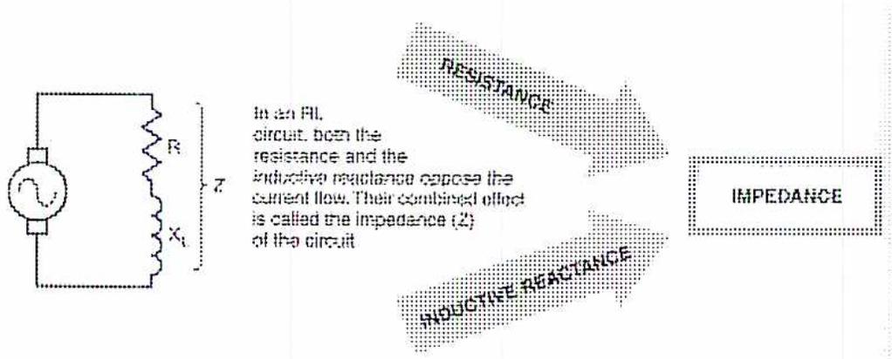
In an RL circuit, both the resistance and the inductive reactance oppose the current flow. Their combined effect is called the impedance ( \( Z \) ) of the circuit.
Figure 11
Impedance
A 1000 kVA rated transformer with 480 secondary volts and 5.75% impedance has a rated full-load secondary amps of:
$$ 1000 \text{ kVA} / (480 \times 1.732) = 1203 \text{ amps} $$
1203 amps will flow in the secondary if the secondary is short circuited and the primary voltage is increased to a point where the secondary voltage is:
$$ 5.75\% \times 480 \text{ volts} = 27.6 \text{ volts.} $$
Therefore, the impedance ( \( Z \) ) of the secondary windings is:
$$ \begin{aligned} Z &= V/I \\ &= 27.6 \text{ volts}/1203 \text{ amps} \\ &= 0.02294 \text{ ohms} \end{aligned} $$
If there were a short circuit fault on the secondary side, the transformer would deliver:
$$ 480\text{V}/0.02294 \text{ ohms} = 20\,924 \text{ A} $$
There is a tremendous amount of energy that could do significant damage to conductors and equipment that are in the path of the fault. Transformers, conductors and other equipment must be built to withstand this amount of energy. Engineers must take this into account when designing safe power distribution systems. Protective devices such as breakers and fuses must be capable of operating quickly so that the amount of energy delivered to a short circuit is limited. Lower transformer impedance means fewer losses but increases the amount of short circuit current available in a power distribution system.
Temperature Rise
In an operational transformer, the copper losses in the windings and magnetic losses in the core are converted into heat. Manufacturers must select materials and design transformer cooling systems to accommodate this temperature rise.
Increasing the diameter of the conductor decreases the resistance of the windings. This should decrease copper losses and decrease the temperature rise. However, increasing the diameter of the winding means increasing the size of the core, which will increase the magnetic losses. The cost of the unit will go up to achieve a lower temperature rise. This increase in cost may be offset by longer transformer life expectancy.
Common temperature rise values are 55°C, 80°C, 115°C, and 150°C. The life expectancy of a 55°C transformer is more than twice that of a 115°C unit with the same kVA rating.
Temperature rise values indicate the maximum temperature rise (in degrees Celsius) that a transformer will exhibit at full-load conditions. Temperature rise is a good indicator of transformer efficiency and general quality. An efficient transformer loses less power through heat and operates at a cooler temperature.
Altitude reduces the ability of air to cool a transformer. If operated at higher altitudes, the kVA rating should be reduced 0.3% for each 100 m above 1000 m, depending on the manufacturer.
Harmonics
In general, transformers used in power systems operate at a fundamental frequency of 60 Hz in North America and 50 Hz in Europe and many other parts of the world. Harmonics are natural multiples of fundamental frequencies. For example, the third harmonic for a 60 Hz system has a frequency of \( 3 \times 60 = 180 \) Hz.
Consumer electronics, such as computers and stereo systems, fall into a category called non-linear loads. These loads utilize what are called switch mode power supplies. These power supplies create harmonics that are disruptive to distribution transformers.
Harmonics in transformers cause more losses, more heat and less efficiency. Modern manufacturers design transformers to tolerate the extra heating effect caused by harmonics. A rating factor called the K-factor is an indicator of how well a transformer tolerates harmonics.
Objective 3
Calculate load, power, iron and copper losses, and efficiency in a transformer.
TRANSFORMER EFFICIENCY
In general, transformers are very efficient. Nameplate efficiencies of above 95% are not uncommon. Nevertheless, transformer losses can be significant when many units form part of a distribution system. The two components that make up transformer losses are copper losses and iron (core) losses. Copper loss (load loss) depends on the amount of load connected to a transformer. Iron loss (no-load) is independent of the load.
Transformer efficiency is:
$$ \begin{aligned}\text{efficiency} &= \frac{\text{power output}}{\text{power input}} \times 100 \\ &= \frac{\text{power output}}{\text{power output} + \text{copper loss} + \text{core loss}} \times 100 \\ &= \frac{\text{volts} \times \text{amps (secondary)} \times \text{power factor}}{(\text{volts} \times \text{amps (secondary)}) + \text{copper loss} + \text{core loss}} \times 100\end{aligned} $$
COPPER LOSS ( \( I^2R \) LOSS)
Copper loss results from the resistance of the primary winding and secondary winding. Resistance is a function of the conductor material used for the windings, the cross-sectional area of the conductor, and the length of the conductor. Copper is the natural choice for a conductor because of its availability, strength, cost and low resistance. Power losses due to resistance are called \( I^2R \) losses. As indicated by the formula, the losses are a function of the square of the current. If the current through a winding is doubled, the power losses increase by a factor of four.
Iron Loss (Core Loss)
Iron loss is the energy required to sustain the magnetic field in the steel core. Iron losses result from the constant magnetizing and de-magnetizing of the core. It is the energy required to align and realign the molecular particles of the magnetic material. This is called hysteresis loss. Iron loss does not depend on the load for a given transformer.
Various core materials have different permeability, which is the ability to increase flux density within the material when electric current flows through a conductor wrapped around the magnetic materials. For example, silicon steel has fewer losses than carbon steel. A relatively new metal alloy called amorphous iron has fewer losses than silicon steel.
Another type of iron loss is eddy current loss. Eddy currents are circulating currents that are induced by the magnetic material. Heat is generated as the current circulates. Eddy current losses are reduced by making the core out of laminated sheets and varnishing each sheet so that it is electrically insulated. The laminations do not affect the permeability of the core.
Example 1
A transformer's primary windings have a current flow of 20 A. The secondary windings have a current flow of 90 A. The applied voltage is 2.3 kV and the output voltage is 480 V. The power factor is 0.92. The transformer's measured copper loss is 1.13 kW.
Calculate:
- a) primary loading in kVA
- b) secondary loading in kVA
- c) input power
- d) output power
- e) efficiency
- f) iron loss
Solution
-
a.) Primary loading
\(
= 2.3 \text{ kV} \times 20 \text{ A}
\)
\( = 46 \text{ kVA (Ans.)} \) -
b.) Secondary loading
\(
= 480 \text{ V} \times 90 \text{ A}
\)
\( = 43\,200 \text{ VA} \)
\( = 43.2 \text{ kVA (Ans.)} \) -
c.) Input power
\(
= VA \cos \Phi
\)
\( = 46 \text{ kVA} \times 0.92 \)
\( = 42.32 \text{ kW (Ans.)} \)
$$ \begin{aligned} \text{d.) Output power} &= VA \cos \Phi \\ &= 43.2 \text{ kVA} \times 0.92 \\ &= \mathbf{39.74 \text{ kW}} \text{ (Ans.)} \end{aligned} $$
$$ \begin{aligned} \text{e.) Efficiency} &= \frac{\text{Output VA}}{\text{Input VA}} \times 100 \\ &= \frac{43.2 \text{ kVA}}{46 \text{ kVA}} \times 100 \\ &= 0.939 \times 100 \\ &= \mathbf{93.9\%} \text{ (Ans.)} \end{aligned} $$
Alternatively,
$$ \begin{aligned} \text{Efficiency} &= \frac{\text{Output power}}{\text{Input power}} \times 100 \\ &= \frac{39.74 \text{ kW}}{42.32 \text{ kW}} \times 100 \\ &= 0.939 \times 100 \\ &= \mathbf{93.9\%} \text{ (Ans.)} \end{aligned} $$
$$ \begin{aligned} \text{f.) Input power} &= \text{Output power} + \text{Copper loss} + \text{Iron loss} \\ 42.32 \text{ kW} &= 39.74 \text{ kW} + 1.13 \text{ kW} + \text{Iron loss} \\ \text{Iron loss} &= (42.32 - 39.74 - 1.13) \text{ kW} \\ &= \mathbf{1.45 \text{ kW}} \text{ (Ans.)} \end{aligned} $$
Objective 4
Explain the purpose and procedures for transformer short and open circuit tests.
TRANSFORMER LOSS MEASUREMENT
A series of tests are performed on a transformer before dispatch from the manufacturer's site to determine the equivalent resistance, impedance, and reactance of the windings and the iron and copper losses to be expected when the transformer is on load.
The tests performed are the:
- • Short-circuit test
- • Open-circuit test
Short-Circuit Test
The copper losses of a transformer are found using a short-circuit test as shown in Fig. 12. This test is a simulated full-load test made with the secondary winding short-circuited. The primary current is adjusted using the rheostat until the ammeter reads rated full load current. With the secondary winding short-circuited, the active load on the secondary is zero. However, with rated full-load current on the primary, the secondary current must be at rated full-load value and \( 180^\circ \) out of phase with the primary causing the transformer core to be demagnetized at the maximum rate. Therefore, the applied voltage necessary to give full-load current is only from 2% to 10% of the rated voltage and the iron losses and inductance are at a minimum.
As a result, the wattmeter reads the \( I^2R \) or copper losses of the transformer at rated full load.
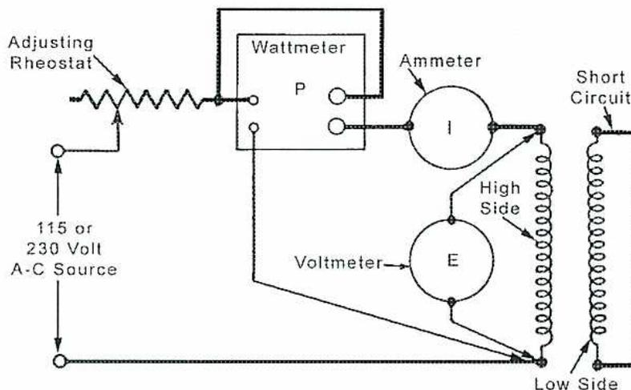
The diagram illustrates the setup for a short-circuit test on a single-phase transformer. An AC source, labeled "115 or 230 Volt A-C Source", is connected to an "Adjusting Rheostat". The circuit includes a "Wattmeter" with terminals P and I, an "Ammeter" (I), and a "Voltmeter" (E). These instruments are connected to the "High Side" (primary) winding of the transformer. The "Low Side" (secondary) winding is connected to a "Short Circuit" link. The voltmeter measures the reduced voltage applied to the primary, the ammeter ensures rated current is flowing, and the wattmeter measures the power consumed, which corresponds to the copper losses.
Figure 12
Short-circuit Testing On a Single-phase Transformer
If the measurements taken when the rated current is flowing in the primary winding are as follows:
$$ \begin{aligned} \text{input power} &= P \text{ watts} \\ \text{primary current ( in high-voltage winding)} &= I_1 \text{ amps} \\ \text{applied volts} &= E_1 \text{ volts} \end{aligned} $$
The following calculation can be made:
$$ \begin{aligned} \text{input power} &= I_1^2 R \\ R &= \frac{P}{I_1^2} \\ &= \text{resistance of winding (ohms)} \\ Z &= \frac{E_1}{I_1} \\ &= \text{impedance of winding (ohms)} \\ \text{and } X &= \sqrt{Z^2 - R^2} \\ &= \text{reactance of winding (ohms)} \end{aligned} $$
Open-Circuit Test
When one side of a transformer is left open-circuited and the other side is supplied with alternating current at rated voltage, the current flowing in the winding will be extremely small (about 5% of full-load amperes).
With rated full load voltage on the primary winding, the voltage across the secondary winding must be the rated full load secondary voltage. When the secondary circuit is open, there can be no secondary current flow, no demagnetizing of the transformer core, and the magnetic flux is maximum giving maximum primary inductance \( X_L \) .
The no-load current, flowing only in the primary, has two components:
- • One producing the flux in the core.
- • The other taking care of the copper losses and the hysteresis-plus eddy current-losses in the core.
In some cases, the copper losses are neglected and the wattmeter reading represents the iron losses. To be more exact, the iron losses are calculated as follows:
wattmeter reading minus the copper losses.
$$ \text{copper losses} = I^2 \times R $$
where:
\( I \) = current flow during open circuit test
\( R \) = resistance of primary winding as determined by applying DC to the primary winding
Fig. 13 shows a wiring diagram for an open-circuit test on a single-phase transformer. Note that the open circuit is on the high-voltage side. Either winding can be energized and metered, but it is usually easier to do this on the low-voltage side.
The results of these tests are entered in a performance record (or stamped on the nameplate) and supplied with the transformer.
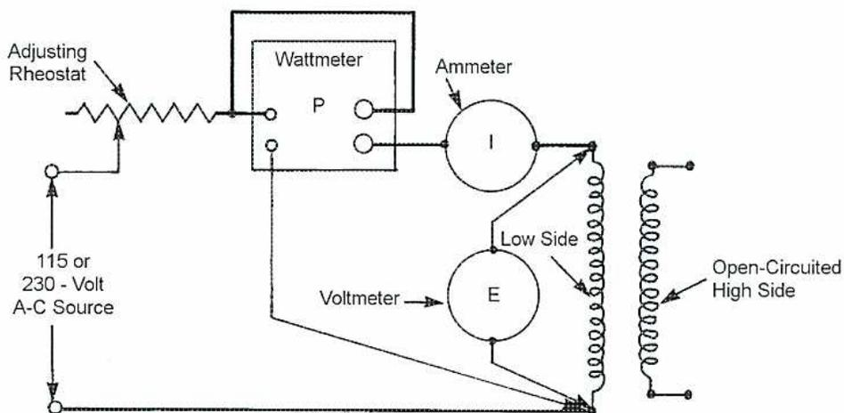
The diagram illustrates the electrical connections for an open-circuit test. On the left, a '115 or 230 - Volt A-C Source' is connected to an 'Adjusting Rheostat'. The rheostat is in series with the 'Low Side' (primary) winding of a transformer. A 'Wattmeter' (labeled 'P') is connected in parallel with the series combination of the rheostat and the primary winding. An 'Ammeter' (labeled 'I') is connected in series with the primary winding. A 'Voltmeter' (labeled 'E') is connected in parallel across the primary winding. The 'High Side' (secondary) winding is shown as an open circuit, labeled 'Open-Circuited High Side'.
Figure 13
Open-circuit Testing On a Single-phase Transformer
Objective 5
Describe the methods of cooling a transformer.
TRANSFORMER COOLING
The life expectancy of a transformer can be dramatically reduced if the operating temperature exceeds the rated temperature of the unit. Some manufacturers claim that a 10°C increase in temperature above the rated temperature will reduce the life of the transformer by 50%. Resistance increases with temperature. Prolonged high temperature causes the insulation to breakdown until the transformer fails. This statement underscores the importance of transformer cooling.
There are several methods of transformer cooling but, in general, the cooling is by either:
- • air
- • oil
Air Cooling
Smaller distribution transformers are the dry-type because their construction allows air to circulate through the core and coils. Dry-type transformers:
- • have an input voltage of 600 V or less
- • are air cooled
- • do not use oil as a coolant
Some dry-type transformers are filled with gas such as Freon that is used as a coolant. In this case, the transformer is filled with the gas and hermetically sealed. Fig. 14 shows dry-type enclosures with ventilation openings at the top and bottom.
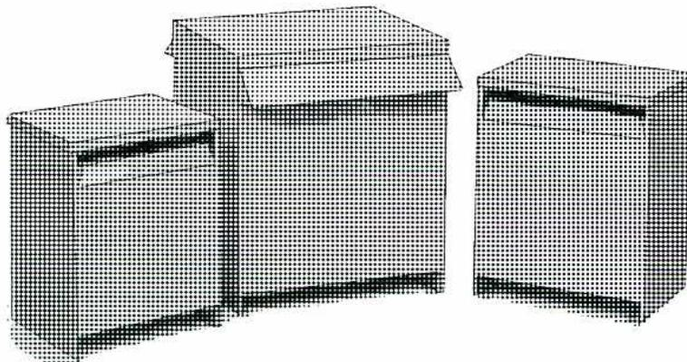
Figure 14
Dry Type Enclosures
Oil Cooling
In the oil-immersed type, the core and windings are immersed in a certain type of oil. Oil has a greater ability to dissipate heat than air. Transformer oil has a high dielectric value, which means that it has a good insulating quality and low viscosity. Oil also helps extinguish arcs that occur if a winding fails.
Oil-immersion cooling also requires a provision for volumetric expansion of the oil as it heats. An expansion tank on top of the transformer is fitted for this purpose, along with a relief valve or rupture diaphragm to prevent over-pressurization as the oil expands. The expansion tank cannot be open to the atmosphere because the air and moisture that would enter the tank would degrade both the oil and the transformer insulation.
This can be addressed by one of the following methods:
- • The tank is vented through a breather pipe that contains a filter and a moisture absorbing desiccant, such as a silica gel.
- • The tank is slightly pressurized with a blanket of nitrogen or another inert gas.
- • A flexible rubber diaphragm floats on the oil to seal it from the air.
For a transformer with a temperature rise of \( 55^{\circ}\text{C} \) , the cooling system is designed to maintain an average winding temperature that is no more than \( 55^{\circ}\text{C} \) above an ambient temperature of \( 30^{\circ}\text{C} \) .
The cooling system for oil-filled equipment includes radiators or tube and shell heat exchangers to help cool the oil. The oil may circulate naturally due to convection, or pumps may be necessary to force the oil through external cooling equipment.
Auxiliary fans may also be used for additional cooling capacity. In some operations, transformers are sprayed with water to keep them cool during very hot weather.
It is important to keep transformer enclosures and the area around them clean and clear. Transformer vaults and rooms are not to be used for storage. Any items near or against the transformer will impede heat transfer around the enclosure. Heat transfer will be compromised if dirt and grime are allowed to build up on transformer surfaces.
Fig. 15 shows a radiator bank and auxiliary fans.
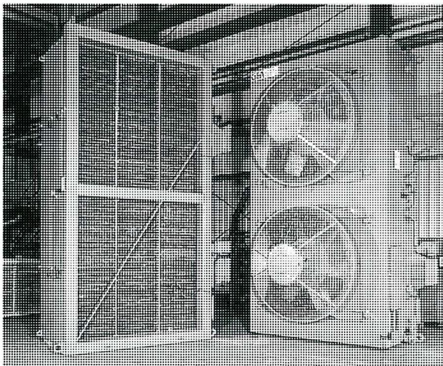
Figure 15
Radiator and Cooling Fans
(Courtesy of Kuhlman Electric Corporation/
GEA Renzmann & Gruenewald GmbH)
Some transformers use a forced oil cooling system. A typical schematic diagram is shown in Fig. 16. The oil pump continually circulates oil through the transformer core to the oil cooler.
![A schematic diagram of a forced oil cooling system for a transformer. On the left is a rectangular block labeled 'Transformer'. A pipe connects the top of the transformer to an 'Oil Pump', which is represented by a circle with a triangle inside. Arrows indicate 'Oil Flow' from the transformer, through the pump, and into the top of a vertical 'Oil Cooler' on the right. From the bottom of the oil cooler, a pipe leads to a 'Temperature Indicator' (a circle with a needle). The oil then flows through an 'Oil Flow Indicator' (a circle with a diamond shape) and a valve. A pipe from the bottom of the oil cooler also connects to an 'Oil Leak Indicator' box on the far right. At the bottom of the diagram, 'Cooling Water' is shown entering the bottom of the oil cooler through a pipe with a valve.](2ae3eae1bd80a90f192f568ae246a9a6_img.jpg)
Figure 16
Oil Cooler Schematic
Fig. 17 shows an assembled oil cooler skid used for transformer cooling. The cooling water that circulates through the oil cooler cools the hot transformer oil. An oil leak detector sounds an alarm if there is a break in any of the tubes of the oil cooler.
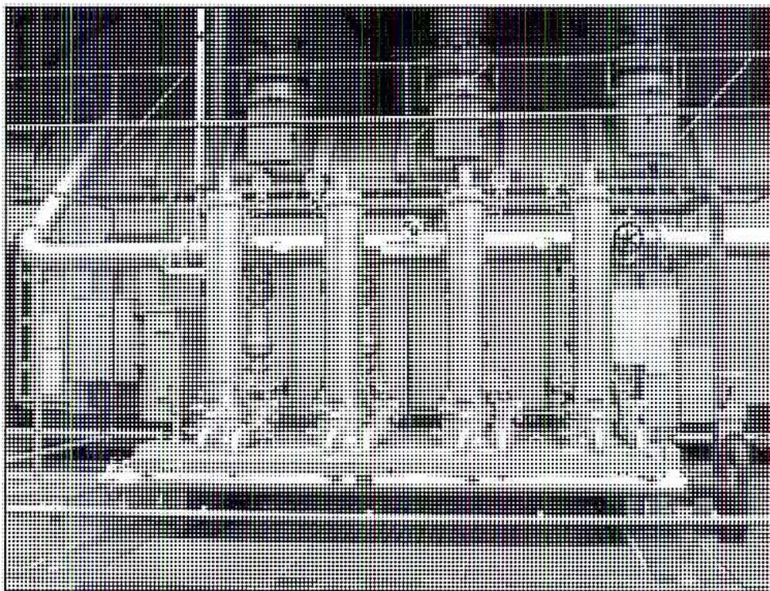
Figure 17
Oil-Cooling System Shell and Tube Heat Exchangers
(Courtesy of Kuhlman Electric Corporation/
GEA Renzmann & Gruenewald GmbH)
A shell-and-tube design of the oil cooler is shown in Fig. 18.
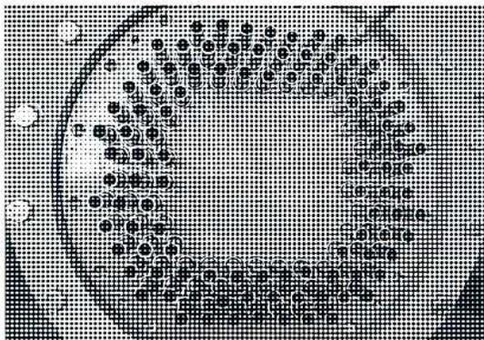
Figure 18
Shell-and-Tube Oil Cooler
(Courtesy of Kuhlman Electric Corporation/
GEA Renzmann & Gruenewald GmbH)
COOLING CLASSES
North American Standards committees such as ANSI (American National Standards Institute), IEEE (Institute of Electrical and Electronics Engineers), NEMA (National Electrical Manufacturers Association), and international committees such as IEC (International Electrotechnical Commission) require that the cooling class of each transformer appear on its nameplate.
Cooling classes are designated by letters:
First Letter: Internal cooling medium in contact with the windings
- O Mineral oil or synthetic insulating liquid with flash point less than 300°C
- K Insulating liquid with flash point greater than 300°C
- L Insulating liquid with no measurable flash point
Second letter: Circulation mechanism for internal cooling medium:
- N Natural convection flow through cooling equipment and windings
- F Forced circulation through cooling equipment (cooling pumps), natural convection flow in windings (non-directed flow)
- D Forced circulation through cooling equipment, directed flow from the cooling equipment into at least the main windings
Third letter: External cooling medium
- A Air
- W Water
Fourth letter: Circulation mechanism for external cooling medium
- N Natural convection
- F Forced circulation (fans, pumps)
Types of Cooling Systems
There are many variations of the above cooling systems:
- • Ventilated, self-cooled transformers. Ventilation ports are located in outside walls of the transformer enclosure. There are no fans to force air into and out of the enclosure with no external fins or radiators. Cooler air enters the lower ports, is heated as it rises past the windings, and exits through the upper ventilation ports.
- • Self-cooled, additionally cooled by forced air circulation. This type consists of ventilation ports for fan inlets and outlets only. Inlets are usually filtered. Normally, there are no additional ventilation ports for natural air circulation.
- • Ventilated, self-cooled. In addition, these have a fan or fans providing additional forced-air cooling. Fans may be wired to start automatically when the temperature reaches a pre-set value.
- • Self-cooled, non-ventilated (NV). The enclosure has no ventilation ports or fans and is not sealed to exclude migration of outside air, but there are no provisions to intentionally allow outside air to enter and exit. Cooling is by natural circulation of air around the enclosure. This transformer may have some type of fins attached outside the enclosure to increase surface area for additional cooling.
- • Self-cooled, sealed with a gas inside. The enclosure is hermetically sealed to prevent leakage. These transformers typically have a gas, such as nitrogen or Freon, to provide high dielectric strength and good heat removal. Cooling occurs by natural circulation of air around the outside of the enclosure. There are no fans to circulate cooling air; however, there may be fins attached to the outside to aid cooling.
- • Oil-immersed and self-cooled. Transformer windings and core are immersed in some type of oil and are self-cooled by natural circulation of air around the outside enclosure. Fins or radiators may be attached to the enclosure to aid cooling.
- • Liquid-immersed, self-cooled/forced-air cooled. Same as above, with the addition of fans. Fans are usually mounted on radiators. The transformer usually has two load ratings, one with the fans off and a larger rating with fans operating. Fans may be wired to start automatically at a pre-set temperature.
- • Liquid-immersed, self-cooled/forced air-cooled/forced liquid, and forced-air cooled. Windings and core are immersed in some type of oil. This transformer typically has radiators attached to the enclosure. It has self-cooling, natural ventilation, forced-air cooling fans, and forced-oil cooling (pumps) with additional forced-air cooling. This transformer has three load ratings corresponding to each cooling step. Fans and pumps may be wired to start automatically at pre-set levels as temperature increases.
- • Liquid-immersed, water-cooled. An oil/water heat exchanger (radiator) is normally attached to the outside of the tank. Cooling water is pumped through the heat exchanger, but the oil flows only by natural circulation. As the windings heat the oil, it rises to the top and exits through piping to the radiator. As it is cooled, the oil descends through the radiator and re-enters the transformer tank at the bottom.
- • Liquid-immersed, forced-liquid cooled. This transformer normally has only one rating. It is cooled by pumping oil (forced oil) through a radiator normally attached to the outside of the tank. Also, air is forced by fans over the cooling surface.
- • Liquid-immersed, forced-liquid cooled, water cooled. This transformer is cooled by an oil/water heat exchanger normally mounted separately from the tank. Both the transformer oil and the cooling water are pumped through the heat exchanger to accomplish cooling.
Distribution transformers are commercially available in dry-type or liquid-filled. Depending on the application, certain criteria need to be determined. Even though an oil-filled transformer may require less space in a building, local installation codes may be costly to implement for oil-filled equipment. Dry transformers eliminate concerns about spilling or leaking oil. Liquid-filled transformers are usually located outdoors, but if they are located within buildings or on rooftops, they often require special drainage curbs or dikes for containing potential leaks. Some oils are flammable and require special fire suppression systems.
Objective 6
Describe the methods of connecting a transformer, including delta-delta, star-star, delta-star, and star-delta.
Three identical single-phase transformers can be connected together to form a three-phase transformer. This arrangement is often visible on power poles near the service entrance to commercial or industrial facilities.
To save costs, manufacturers assemble three single-phase cores in one enclosure.
The voltage/amperage formula for a single-phase transformer is:
$$ V/A = \text{volts } (E) \times \text{amperes } (I) $$
Consider the 240/480 75 kVA transformer shown in Fig. 19.
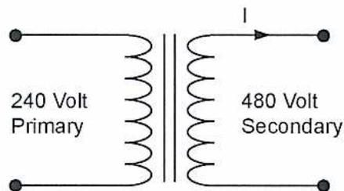
Figure 19
Single-phase Transformer
If 240 V is applied to the primary windings, 480 V will be available at the secondary windings. The secondary current available would be:
$$ I (\text{secondary}) = \frac{75\,000\text{ VA}}{480\text{ V}} = 156.25\text{ A} $$
$$ I (\text{primary}) = \frac{75\,000\text{ VA}}{240\text{ V}} = 312.5\text{ A} $$
The voltage/amperage formula for a three-phase transformer is:
$$ V/A = \sqrt{3} \times I_L \times E_L \quad (I_L = \text{line current}, E_L = \text{line voltage}) $$
If the three single-phase transformers were connected in a three-phase arrangement, the total capacity would be \( 3 \times 75 \text{ kVA} = 225 \text{ kVA} \) .
There are two methods of connecting the three individual sets of windings in a three-phase transformer. Using the delta method, the windings are connected together in series, forming a loop that is represented schematically by a triangle ( \( \Delta \) , the Greek letter delta.) The windings for one phase are connected on each leg of the delta, and the leads to the electrical main, or supply line, are connected between each winding set at the corners of the delta. In a delta connection, the three-phase line voltage is equal to the voltage in any one phase. The three-phase line current is equal to \( \sqrt{3} \times \) the current in any one phase.
The second method is the star method. Here, each phase's windings are connected to another phase at one end and to the supply line at the other end. The three phases are interconnected at a common point, called the star point . The schematic representation of this arrangement resembles a star or three-pointed star. In a star connection, the 3-phase line current is equal to the current in any one phase. The 3-phase line voltage is equal to \( \sqrt{3} \times \) the voltage in any one phase.
Fig. 20 shows a three-phase transformer with the primary and secondary windings both connected in delta. The secondary current is:
$$ I_L \text{ (secondary)} = \frac{225\,000 \text{ VA}}{\sqrt{3} \times 480 \text{ V}} = 270.6 \text{ A} $$
$$ I_L \text{ (primary)} = \frac{225\,000 \text{ VA}}{\sqrt{3} \times 240 \text{ V}} = 541.3 \text{ A} $$
![Schematic diagram of a three-phase transformer with delta-connected windings. The primary side (left) shows three windings connected in a triangle. Vertical double-headed arrows indicate line voltages of 240 Volts between the three supply lines. The secondary side (right) also shows three windings connected in a triangle. Vertical double-headed arrows indicate line voltages of 480 Volts between the three output lines. An arrow labeled 'I' indicates the current flowing into one of the secondary lines.](1be8e9cad5f38fa47bdb81e549a3bec9_img.jpg)
Figure 20
Three-phase Transformer
Fig. 21 shows the same three transformers connected with the primary windings in delta and the secondary windings in star. The star configuration provides two voltages, 831 V (line voltage) and 480 V (phase voltage).
The secondary line current is:
$$ I_L \text{ (secondary)} = \frac{225\,000\text{ VA}}{\sqrt{3} \times 831\text{ V}} = 156.3\text{ A} $$
Transformers can be used to step up voltages. Fig. 21 shows a delta-star configuration that steps 240 V on the primary side up to 831 V on the secondary side.
![Diagram of a delta-star step-up transformer configuration. The primary side is connected in a delta configuration with three windings forming a triangle. The line voltage across each winding is labeled as 240 Volts. The secondary side is connected in a star configuration with three windings meeting at a common central point. The line voltage between any two secondary lines is labeled as 831 Volts. The phase voltage across each secondary winding is also labeled as 831 Volts. An arrow labeled I_L indicates the line current on the secondary side.](49ee89a1d5852ab005dbbab6de09a8a6_img.jpg)
Figure 21
Delta-star Step up Configuration
Transformers can also be used to step down voltages. Figure 22 shows a delta-star configuration that steps 600 V on the primary side down to 208/120 V on the secondary side.
![Diagram of a Delta-star step-down transformer configuration. The primary side is connected in a delta configuration with three windings. The input line voltage is 600 Volts, which is also the phase voltage across each winding. The secondary side is connected in a star configuration. The phase voltage across each secondary winding is 120 Volts. The line voltage on the secondary side is 208 Volts. The diagram shows the relationship between the 600V primary, the 120V secondary phase voltage, and the 208V secondary line voltage. An arrow labeled I_L indicates the line current on the secondary side.](3121ebddccf183ca63bb9781be440a7e_img.jpg)
Figure 22
Delta-star Step down Configuration
These voltage levels are very common in commercial and industrial applications. For example:
- • Large motors operate at three-phase 480 V - 6900 V
- • Small motors operate at three-phase 208 V
- • Industrial lighting such as sodium vapour, mercury vapour, and metal halide operate at single-phase 208 V
- • Incandescent lighting, hand tools, and computers operate at single-phase 120 V
There are only four possible three-phase transformer combinations:
- • delta to delta
- • delta to star
- • star to delta
- • star to star
The use of delta or star depends a great deal on the application. A three-phase motor (Fig.23) is an example of a balanced load in which each of the windings of the motor has identical impedance. A balanced load only requires three supply conductors.
The diagram shows a 3-phase motor on the left, represented by a circular symbol with three internal windings. Three wires connect the motor to a delta-connected transformer on the right. The transformer is shown as a triangle of three inductor-like windings. The label 'Delta Connected Transformer' is placed below the transformer.
Figure 23
Three-phase Motor Connection
Star connections are used where there is an unbalanced load. Unbalanced loads require four wires as shown in Fig. 24.
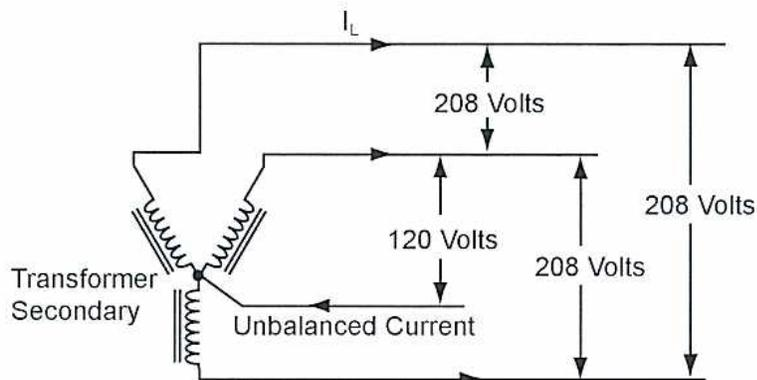
The diagram illustrates a star-connected transformer secondary. Three windings meet at a central star point. Three phase wires extend from the windings, with the top one labeled \( I_L \) . A fourth wire, the neutral, extends from the star point. Vertical double-headed arrows indicate voltage levels: 120 Volts between each phase wire and the neutral, and 208 Volts between any two phase wires. An arrow labeled 'Unbalanced Current' points into the neutral wire. The label 'Transformer Secondary' is placed to the left of the windings.
Figure 24
Three-phase Four-wire Star Connection
Lighting, hand tools, and computers are examples of single-phase loads connected to a three-phase supply system. It is not possible to perfectly balance the loads through the three phases of the system. The flexibility of star systems allows two voltage levels (208/120 V) and unbalanced loads. The unbalanced current is carried in the fourth wire of the system. This wire is called the neutral or ground conductor. It is connected to the star point of the star transformer. This wire is part of what is called a three-phase four-wire star connected grounded neutral system.
Objective 7
Explain the theory and significance of transformer paralleling.
TRANSFORMER PARALLELING
Transformers can be paralleled to increase the kVA capacity of a power distribution system. For example, two three-phase 75 kVA transformers could be paralleled to provide 150 kVA. The voltage ratings and kVA capacity of the transformers should be the same to do this without complications. If possible, the transformers should even have the same manufacturer. If the impedance of the transformers is not the same, some current may circulate between the transformers. In other words, not all current is supplied to the load. This can present problems in sizing conductors that supply power to the load and in properly protecting the system with fuses or breakers.
Another problem with paralleling transformers is related to short-circuit current. If there is a short circuit in a power distribution system, the current in the system takes the path of least resistance. Short circuit current can reach very high levels if there is very little resistance in the system. This current can do a lot of damage to lights, conductors, motors and transformers. Engineers do a comprehensive analysis of a system so that it is properly protected in the event of a short circuit. A transformer that is in the path of a short circuit will resist this current due to its impedance. Impedance is a combination of the resistance of the copper windings and the inductance of the windings. Impedance is halved if a transformer is paralleled with an identical transformer. This is similar to resistors in parallel. If two 6-ohm resistors are placed in parallel, the resultant resistance is 3 ohms.
Transformers are marked to distinguish the primary windings and the secondary windings. This is very important if transformers are to be paralleled.
The high-voltage windings of transformers are marked H and the low voltage windings are marked X. The high and low voltage sides of single-phase transformers are marked H1/H2 and X1/X2 respectively, as shown in Fig. 25.
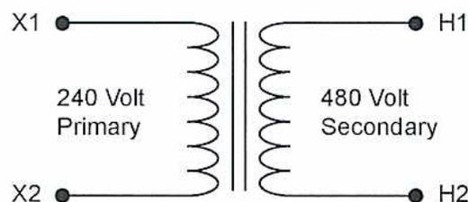
The diagram illustrates a single-phase transformer with two windings separated by a vertical core symbol. The left winding is labeled '240 Volt Primary' and has terminals marked X1 at the top and X2 at the bottom. The right winding is labeled '480 Volt Secondary' and has terminals marked H1 at the top and H2 at the bottom. The markings indicate the relative polarity of the windings.
Figure 25
Single-Phase Transformer Markings
The high and low voltage sides of three-phase transformers are marked H1/H2/H3 and X1/X2/X3 respectively as shown in Fig. 26.
![Figure 26: Three-phase Transformer Markings. A schematic diagram of a three-phase transformer. The primary side (high voltage) is connected in a delta configuration with terminals H1, H2, and H3. The voltage across each winding is 600 Volts. The secondary side (low voltage) is connected in a star configuration with terminals X1, X2, and X3 meeting at a common neutral point. The voltage from each terminal to the neutral is 120 Volts. The line-to-line voltage on the secondary side is 208 Volts. An arrow labeled I_L indicates the line current on the secondary side.](007b053fe94a8348f75128a584503fd0_img.jpg)
Figure 26
Three-phase Transformer Markings
Transformers that are paralleled must also have the same winding configuration. For example, the transformers should all be wound delta-star, or delta-delta, or star-star.
The transformers in Fig. 27 are operating in parallel and have the same load kVA base.
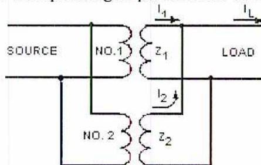
Figure 27
Parallel Transformers
(Courtesy of Bureau of Reclamation
U.S. Department of the Interior)
Objective 8
Describe the applications of instrument transformers.
INSTRUMENT TRANSFORMERS
Instrument transformers fall into two categories:
- • current transformers
- • potential transformers
Both types of transformers are used in conjunction with metering systems, measuring systems, or protective relaying systems. They are often used to transform either the current or the voltage to a safe level so that it can be easily used in the above systems.
Current Transformers (CT)
Current transformers provide a signal that is proportional to the amount of current flowing in a conductor. A current transformer is a one-winding transformer. The primary winding consists of the current flowing through the conductor, as shown in Fig. 28. This current induces a voltage in the secondary winding, which causes a current to flow that is proportional to the primary current. Current transformers are always stamped with a ratio, for example 200:5. In Fig. 28, if 100 A is flowing in the main conductor, then 2.5 A will flow in the circuit to the ammeter. If 200 A flows in the main conductor, 5 A flows in the metering circuit.
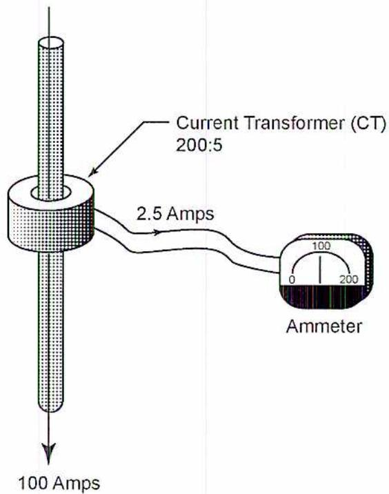
Figure 28
Current Transformer
Potential Transformers (PT)
Potential transformers provide a voltage signal that is proportional to a larger voltage. Generally, the secondary voltage of potential transformers used for metering purposes is 120 V.
Fig. 29 shows three potential transformers connected to a three-phase 600 V system. The potential transformers step the voltage down to a safe level of 120 V. Voltmeters are used to indicate the voltage in all three phases. Local electrical codes require that the transformers be protected with fuses.
![Diagram of three potential transformers connected to three vertical busbars labeled A, B, and C. Each transformer has a primary winding connected across two busbars and a secondary winding connected to a voltmeter. The top transformer is connected to busbars A and B, with its secondary connected to a voltmeter. The middle transformer is connected to busbars B and C, with its secondary connected to a voltmeter. The bottom transformer is connected to busbars A and C, with its primary windings in series with fuses. Each voltmeter has a scale from 0 to 600, with a needle pointing to approximately 300.](33ed1f9b27c7c21c797aa928b0f06851_img.jpg)
The diagram illustrates three potential transformers (PTs) connected to three vertical busbars labeled A, B, and C. Each PT consists of a primary winding and a secondary winding. The top PT's primary is connected across busbars A and B, and its secondary is connected to a voltmeter. The middle PT's primary is connected across busbars B and C, and its secondary is connected to a voltmeter. The bottom PT's primary is connected across busbars A and C, with each primary winding in series with a fuse. Its secondary is connected to a voltmeter. Each voltmeter has a scale from 0 to 600, with a needle pointing to approximately 300. The label 'Potential Transformer' is placed below the bottom PT.
Figure 29
Potential Transformers
Objective 9
Describe the safety controls used on a transformer including fast and slow gas detection, oil temperature alarms, low oil level protection, winding temperature alarms, overcurrent and undervoltage protection, synchronization checks, overexcitation, ground fault protection, phase sequence relays, dissolved gas monitoring, and differential protection.
TRANSFORMER SAFETY CONTROLS
Transformers are a vital part of any power distribution system. They can be quite costly, but if a unit fails, the downtime may prove to be even more costly. Transformers are designed to provide 20 – 40 years of service. Without proper maintenance and safety controls, the lifespan can be drastically reduced.
Transformers must operate within safe limits. Large oil filled transformers are equipped with sensors that monitor safe levels of current, voltage, temperature and phase sequence. Oil filled transformers are monitored for oil pressure, temperature, and a sudden or slow increase in gas bubbles.
Safety controls used on transformers include the following:
- • fast and slow gas detection
- • oil temperature alarms
- • low oil level protection
- • winding temperature alarms
- • overcurrent and undervoltage protection
- • synchronization checks
- • overexcitation
- • ground fault protection
- • phase sequence relays
- • dissolved gas monitoring
- • differential protection
Fast and Slow Gas Detection
There is always a certain amount of gas produced within a transformer as a result of the breakdown of cooling oil and insulation as it ages. This process is accelerated by the temperature rise during both normal and abnormal operation. The rate of production of gas and compounds that it contains can be monitored as an indication of the state of the transformer. The gas is entrained, or dissolved, in the oil and is released from the oil in the expansion tank, so that the top of the tank is a convenient location for gas monitoring devices.
A slow gas monitoring device is simply a diaphragm chamber on top of the expansion tank. Over time, as gas accumulates and pressure increases, the diaphragm deflects until it closes a switch. This generates an alarm but is not normally used to trip the transformer because it does not in itself indicate a serious problem. Gas can be collected from the diaphragm chamber when it is vented for later chemical analysis. This analysis is used to look for abnormal gas compounds that indicate overheating. The frequency of venting required is also recorded to monitor the long-term rate of gas accumulation.
An electrical fault within a transformer produces excessive heat, causing a temperature rise which can vaporize the cooling oil and the insulation. If the oil is contaminated by air, then oxidation of the insulation occurs and the gas evolution process is more rapid. A fast gas monitoring device is used to detect sudden accumulations of gas and to trip the transformer breaker on the assumption that a major fault, or even an internal fire, is in progress. The risks of such a condition include failure of transformer components due to overheating, release of oil from the cooling system due to overpressurization, or even a catastrophic explosion of the transformer. Fast gas devices operate using one of the following methods:
- • A diaphragm device, similar to a slow gas device, but sized and engineered to be sensitive to large, sudden quantities of gas.
- • A float within a chamber connected to the transformer and to the expansion tank, which is activated as gas accumulates and displaces the oil within the chamber.
- • A flow switch in the piping between the transformer and the expansion tank, which is calibrated to activate when the flow exceeds a predetermined value due to an increase in pressure.
The fast gas device must be calibrated to ignore normal pressure changes caused by cooling pump surges and normal temperature changes. It is sometimes called a sudden pressure relay or a fault-pressure relay.
Oil Temperature Alarms
Sensors are used to detect abnormal temperatures of the cooling oil. Auxiliary fans are automatically started if temperatures reach a high limit. More fans may be started if the temperature continues to rise. If a critical temperature is reached, the transformer is tripped.
Low Oil Level Protection
Since oil expands with temperature, the proper oil level should be indicated with the transformer operating at full load. Oil level detectors consist of a float operated device that provides a warning if the level is low, sounds an alarm if the level falls, and generates a trip signal if the level continues to fall. Oil level gauges are visible on the transformer enclosure.
Winding Temperature Alarms
Temperature sensors are embedded in either or both the primary and secondary windings.
Overcurrent and Undervoltage Protection
Electrical codes require that transformers are equipped with overcurrent protection. A transformer is designed to handle its rated current plus a margin that allows for temporary overloads (approximately twice the rated current). The transformer must be protected by a fuse or breaker, or combination of both, so that the overcurrent device will automatically disconnect the power applied to the primary windings if the current exceeds safe values.
Breakers and fuses operate on a time/current characteristic. For example, a 100 amp breaker is used to protect a transformer. The breaker will not trip the moment the current reaches 101 A. The higher the current, the less time required to trip the breaker. If the current reaches short circuit levels, the breaker trip extremely quickly, thereby protecting equipment.
There are many different types of breakers, but common breakers use a thermal/magnetic principle. For current overloads of small magnitude, a bimetal strip heats over time and trips the breaker. For larger overloads and short-circuit conditions, the breaker uses a fast-acting electromagnet to trip the breaker.
There are also many different types of fuses. Fuses allow temporary overloads but provide fast short circuit protection. Fuses use a metal alloy that heats up in proportion to the amount of current flowing through the fuse. The more current, the less time it takes for the alloy to heat and trip.
Fuses need to be replaced after they operate. Breakers can be manually reset.
Large power transformers require more sophisticated protection due to their cost. Overcurrent protection is likely to be managed with a dedicated overcurrent relay which causes the transformer breaker to trip when it is activated. Such a relay is normally voltage restrained, meaning that the trip current value adjusts automatically if the voltage falls.
Large transformers commonly use a backup to overcurrent protection which monitors secondary winding voltage. A predetermined undervoltage level, if detected, causes the transformer breaker to trip, ensuring that excessive current will not result from an undervoltage situation.
Overcurrent and undervoltage protection not only protects the transformer, but also prevent overheating of downstream equipment which draws its power from the transformer, including motors and lighting.
Synchronization Checks
When a transformer is in service, the phase rotations on the primary and secondary sides are synchronized to avoid damage to the transformer and its breaker. Specialized relays monitor the synchronization and cause the transformer breaker to trip when the supply and load sides of the transformer are not synchronized. When the transformer trips or is taken out of service, the primary and secondary voltages decay because the supply voltage has been disconnected.
However, the voltage on the load side of the transformer decays more slowly because of the back emf induced by induction motors located downstream. Thus, the two sets of windings will become out of synch . This occurs at approximately 40% of rated voltage, causing the synchronization check relay to activate and the transformer breaker to trip if it is not already open. This protects the transformer from electrical system upsets or loss of supply that cause a loss of synchronization while the transformer breaker is still closed.
Overexcitation
Overexcitation is a condition where the magnetizing current of the primary windings exceeds safe limits. This condition can cause overheating in the transformer.
Transformers are designed to operate at very efficient levels. The magnetic core of the transformer operates at very close to its saturation point. When a core is close to saturation, adding even a small amount of voltage to the primary windings can greatly increase current flow. Considerable heat can be produced when this occurs. Overexcitation protection monitors the saturation condition and will signal alarms and trip the transformer.
Ground Fault Protection
Metals used in support structures, piping, and equipment enclosures are excellent conductors of electricity. All metal work in an industrial workplace must be grounded or earthed. The reason for this is safety. It only takes a few milliamps of current flowing through the human body to impair the operation of the heart.
Electricity always takes the path of least resistance. The human body has a certain amount of natural resistance. Wearing rubber soled boots and using gloves can increase this resistance. Properly grounded metal work will always have less resistance than the human body. For example, a short circuit occurs when one of the secondary supply conductors touches the metal transformer enclosure. The short-circuit current flows to earth and the overcurrent protection disconnects the power, thereby protecting the equipment. A person leaning against the metal enclosure is also protected because the short circuit current chooses the path of least resistance. The key words in this safety
discussion are a properly grounded system . Grounding paths can be impaired by loose or corroded connections.
Ground fault detection is provided by extremely sensitive devices that monitor for any current that may be flowing through the grounded metal work. If such currents occur, the devices interrupt the flow of electricity to equipment. Common ground fault interrupters will operate if 5 milliamps of current or higher are detected. They consist of a current transformer and an overcurrent relay connected to the neutral or ground connection of the transformer.
Phase Sequence Relays
These devices are used to detect the proper phase sequence in three-phase transformers. Phase sequence is important in power distribution systems because it determines the direction of rotation for three-phase motors. If a transformer is disconnected and taken out of service for repair, it is very important that the three-phase primary and secondary supply conductors be reconnected with same phase sequence. Phase sequence relays trip the power supply to a transformer if the phase sequence changes.
Dissolved Gas Monitoring
Dissolved gas analysis of transformer oil can reveal much about the health of a transformer. Oil samples can be sent to labs for complete analysis. Some manufacturers supply built-in gas detectors and relay devices, which trigger a relay or alarm when gases exceed acceptable levels, measured in parts per million of gas in oil.
Hydrogen is produced by cellulose insulation breakdown within the transformer. Heat generated by an electrical arc or fault accelerates this breakdown. Hydrogen has a low solubility in oil, which makes hydrogen a reliable fault indicator. Dissolved hydrogen can be analyzed using portable and on-line instruments.
Dissolved gases also occur due to the slow but natural degradation of transformer oil to yield certain gases. Methane, ethane, ethylene, and acetylene can also be formed from the degradation of transformer oil. The exact nature of a long-term fault can be determined by analyzing the dissolved gases to determine their constituents.
Carbon dioxide and carbon monoxide can be formed from the degradation of insulation on the primary and secondary windings.
Differential Protection
Differential protection for transformers is used to monitor internal faults. It involves using current transformers to monitor the primary and secondary currents of power transformers. Naturally, the primary and secondary currents will be different for power transformers. The secondary windings of the primary and secondary current transformers are made to produce the same current. If there is a difference in the current, a relay is activated, which trips the power transformer.
[This page is intentionally blank except for three hole-punch marks on the right margin.]
Chapter Questions
B3.5
- 1. How are the laminations of a transformer core electrically insulated from each other?
- 2. Name the two general types of transformer construction and describe the main difference between them.
- 3. What is the secondary current of a 10 kVA single-phase transformer with a secondary voltage of 130 volts?
- 4. How much power can be supplied by three identical 37.5 kVA transformers connected in parallel?
- 5. What is the primary voltage of a three-phase 10 MVA transformer that has a primary current of 418.38 amps?
- 6. What is the definition of temperature rise in a transformer?
- 7. What is the definition of K-factor?
- 8. Briefly describe copper loss and core loss for a transformer.
- 9. What are the two most widely used cooling mediums for power and distribution transformers?
- 10. Describe how most dry-type transformers are cooled.
- 11. What other purposes than cooling does transformer oil serve?
- 12. Why is oil better than air for transformer cooling?
- 13. Describe the difference between a liquid-immersed, forced liquid-cooled transformer and a liquid-immersed, forced liquid-cooled, water cooled transformer.
- 14. A current transformer is labelled with a ratio 200:5. What current will flow in the secondary if 150 amps flows in the primary?
- 15. What is the most common three-phase transformer winding arrangement to supply a 208/120 volt unbalance load?
- 16. What letters are used to designate the high voltage side and low voltage side of a transformer?
17. What does the presence of carbon monoxide in transformer oil indicate?
18. Name two types of overcurrent devices.